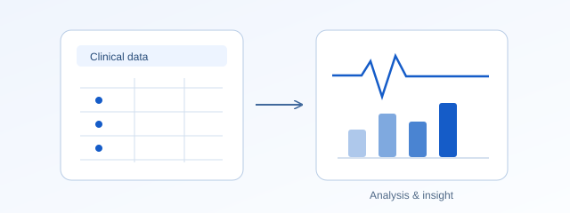

Disease registries
Organise consistent records for retrospective studies and descriptions of disease patterns.
Research / Biostatistics and registries
Reliable evidence from health and clinical data.
The foundations
Biostatistics applies statistical methods to biological and medical questions. It supports study design, the analysis of health data and the interpretation of findings with appropriate attention to uncertainty. Disease registries organise observations over time to support research into patterns of disease and patient outcomes.
Background: National Academies / NCBI: Statistical terminology ↗ (opens in a new tab)

From methods to practice
Examples of how these methods can be used in practice.
Organise consistent records for retrospective studies and descriptions of disease patterns.
Analyse clinical measurements and compare groups while accounting for study design and uncertainty.
Summarise survey responses and investigate associations in medical education and health research.
My research
My publication record includes ophthalmology research, tumour and glaucoma registries, retrospective retinoblastoma analyses, and studies of medical students’ attitudes towards research. These articles reflect my experience with clinical data management and statistical analysis.
Research publications
Explore my journal publications on biostatistics and clinical research. Interdisciplinary work is included in each relevant research area.
Showing 6 of 6 publications
Current Science, 113(06), 1129–1134.
DOI: 10.18520/cs/v113/i06/1129-1134 (opens in a new tab)Sultan Qaboos University Medical Journal, 16(1), e68–e73.
DOI: 10.18295/squmj.2016.16.01.012 (opens in a new tab)Middle East African Journal of Ophthalmology, 23(4), 296–301.
DOI: 10.4103/0974-9233.194077 (opens in a new tab)Saudi Medical Journal, 35(4), 377–384.
Publisher record ↗Middle East African Journal of Ophthalmology, 21(2), 182–185.
DOI: 10.4103/0974-9233.129773 (opens in a new tab)Investigative Ophthalmology & Visual Science, 55(13), 3081.
IOVS 55(13), abstract 3081. Listed provisionally as a conference abstract and excluded from journal article totals while its publisher record is being confirmed.
For collaboration and related enquiries, please get in touch.